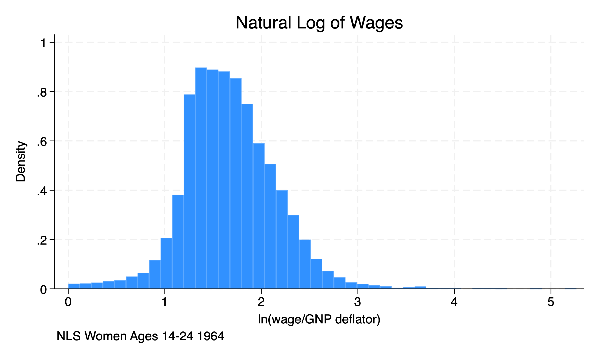
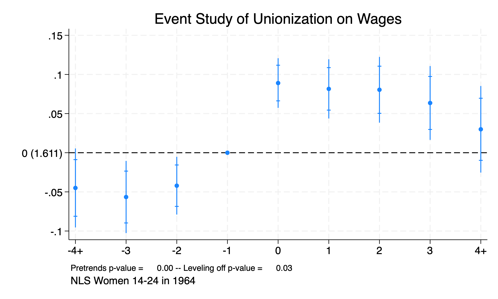
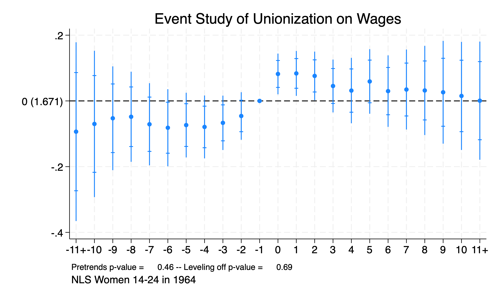

Chapter 2 Event Studies
We can use panel event studies to assess pre-treatment trends. (Please do not confuse panel event studies with time series event studies). We will use data from the National Longitudinal Survey for Women to assess the impact of unionization on wages.
Luckily, we have some Stata commands that will help us with event studies. I have found these commands easier to use than the syntax provided by Cunningham (2021). Freyaldenhoven, Hansen, Perez, and Shapiro (2021) provide their command package xtevent to estimate the parameters of an event study, plot the estimates, and test the estimates.
2.1 National Longitudinal Survey
First, we will need to import the data and inspect the dataset.
/Users/Sam/Desktop/Econ 672/Data
(National Longitudinal Survey of Young Women, 14-24 years old in 1968)
Contains data from nlswork.dta
Observations: 28,534 National Longitudinal Survey of
Young Women, 14-24 years old in
1968
Variables: 21 13 Apr 2026 19:21
(_dta has notes)
----------------------------------------------------------------------------------
Variable Storage Display Value
name type format label Variable label
----------------------------------------------------------------------------------
idcode int %8.0g NLS ID
year byte %8.0g Interview year
birth_yr byte %8.0g Birth year
age byte %8.0g Age in current year
race byte %8.0g racelbl Race
msp byte %8.0g 1 if married, spouse present
nev_mar byte %8.0g 1 if never married
grade byte %8.0g Current grade completed
collgrad byte %8.0g 1 if college graduate
not_smsa byte %8.0g 1 if not SMSA
c_city byte %8.0g 1 if central city
south byte %8.0g 1 if south
ind_code byte %8.0g Industry of employment
occ_code byte %8.0g Occupation
union byte %8.0g 1 if union
wks_ue byte %8.0g Weeks unemployed last year
ttl_exp float %9.0g Total work experience
tenure float %9.0g Job tenure, in years
hours int %8.0g Usual hours worked
wks_work int %8.0g Weeks worked last year
ln_wage float %9.0g ln(wage/GNP deflator)
----------------------------------------------------------------------------------
Sorted by: idcode yearWe can see that this is a longitudinal survey of women ages 14-24 in 1964. Let’s inspect the outcome of interest, the natural log of wages.
sum ln_wages, detail
histogram ln_wage, title(Natural Log of Wages) caption(NLS Women Ages 14-24 1964)variable ln_wages not found
r(111);
r(111);
Next, we will set up the panel
Panel variable: idcode (unbalanced)
Time variable: time, 1 to 15
Delta: 1 unitGenerate a policy variable that follows staggered adoption. This observe changes in the union status or treatment variable of interest.
(4,177 real changes made)
Interview | union2
year | 0 1 | Total
-----------+----------------------+----------
68 | 1,375 0 | 1,375
69 | 1,232 0 | 1,232
70 | 1,508 178 | 1,686
71 | 1,559 292 | 1,851
72 | 1,345 348 | 1,693
73 | 1,561 420 | 1,981
75 | 1,787 354 | 2,141
77 | 1,595 576 | 2,171
78 | 1,390 574 | 1,964
80 | 1,124 723 | 1,847
82 | 1,245 840 | 2,085
83 | 1,171 816 | 1,987
85 | 1,184 901 | 2,085
87 | 1,213 951 | 2,164
88 | 1,270 1,002 | 2,272
-----------+----------------------+----------
Total | 20,559 7,975 | 28,534 2.2 xtevent
We can utilize the command xtevent to calculate and plot an panel event study instead of complex syntax. The command is the following:
xtevent depvar [indepvars], policyvar(PostTreatVar) panelvar(idvar) timevar(timevarname)
We have several options that we need to consider as well. One of the key option is the window options. We will set the window to 3 and then rerun the xtevent command with a window of 10.
xtevent ln_w age c.age#c.age ttl_exp c.ttl_exp#c.ttl_exp tenure , pol(union2) w(3) cluster(idcode) impute(nuchange)Using options panelvar and timevar from xtset
No proxy or instruments provided. Implementing OLS estimator
Linear regression, absorbing indicators Number of obs = 23,541
Absorbed variable: idcode No. of categories = 2,771
F(27, 2770) = 68.03
Prob > F = 0.0000
R-squared = 0.6662
Adj R-squared = 0.6212
Root MSE = 0.2872
(Std. err. adjusted for 2,771 clusters in idcode)
------------------------------------------------------------------------------
| Robust
ln_wage | Coefficient std. err. t P>|t| [95% conf. interval]
-------------+----------------------------------------------------------------
_k_eq_m4 | -.0449924 .0184471 -2.44 0.015 -.0811639 -.0088209
_k_eq_m3 | -.0565855 .0168862 -3.35 0.001 -.0896964 -.0234746
_k_eq_m2 | -.0421016 .0134889 -3.12 0.002 -.0685508 -.0156524
_k_eq_p0 | .089023 .0116097 7.67 0.000 .0662585 .1117874
_k_eq_p1 | .0815659 .0138364 5.90 0.000 .0544352 .1086966
_k_eq_p2 | .0804259 .0153595 5.24 0.000 .0503086 .1105431
_k_eq_p3 | .0635638 .0172566 3.68 0.000 .0297266 .097401
_k_eq_p4 | .0299474 .0202315 1.48 0.139 -.0097229 .0696178
age | .0200353 .0067278 2.98 0.003 .0068434 .0332273
|
c.age#c.age | -.0005226 .0001023 -5.11 0.000 -.0007231 -.000322
|
ttl_exp | .0491603 .0054054 9.09 0.000 .0385614 .0597593
|
c.ttl_exp#|
c.ttl_exp | -.0004479 .000193 -2.32 0.020 -.0008264 -.0000695
|
tenure | .0095845 .0015872 6.04 0.000 .0064723 .0126967
|
time |
2 | .0560166 .0088315 6.34 0.000 .0386996 .0733335
3 | .0575122 .0129664 4.44 0.000 .0320874 .082937
4 | .0603109 .0171093 3.53 0.000 .0267627 .0938592
5 | .0485817 .0215347 2.26 0.024 .0063561 .0908074
6 | .0484417 .0263678 1.84 0.066 -.0032608 .1001441
7 | .0293154 .03143 0.93 0.351 -.0323131 .0909439
8 | .021307 .0362073 0.59 0.556 -.0496891 .0923031
9 | .0151769 .0409211 0.37 0.711 -.0650621 .0954159
10 | -.0014045 .045488 -0.03 0.975 -.0905984 .0877894
11 | -.0124446 .0507805 -0.25 0.806 -.112016 .0871269
12 | -.0173009 .0561008 -0.31 0.758 -.1273046 .0927028
13 | -.0346925 .0608558 -0.57 0.569 -.1540199 .0846348
14 | -.0097838 .0668818 -0.15 0.884 -.140927 .1213595
15 | -.0288719 .0799116 -0.36 0.718 -.1855643 .1278204
|
_cons | 1.221736 .1016406 12.02 0.000 1.022437 1.421035
------------------------------------------------------------------------------From the event study, we find that unionization increases wages for women by \((e^{0.089}-1)*100\% = 9.8\%\) to about \((e^{0.06356}-1)*100\% = 6.6\%\) for four years after unionization.
Now, we will expand the window to 10 years.
xtevent ln_w age c.age#c.age ttl_exp c.ttl_exp#c.ttl_exp tenure , pol(union2) w(10) cluster(idcode) impute(nuchange)Using options panelvar and timevar from xtset
No proxy or instruments provided. Implementing OLS estimator
Linear regression, absorbing indicators Number of obs = 6,687
Absorbed variable: idcode No. of categories = 510
F(41, 509) = 18.19
Prob > F = 0.0000
R-squared = 0.6709
Adj R-squared = 0.6414
Root MSE = 0.2626
(Std. err. adjusted for 510 clusters in idcode)
------------------------------------------------------------------------------
| Robust
ln_wage | Coefficient std. err. t P>|t| [95% conf. interval]
-------------+----------------------------------------------------------------
_k_eq_m11 | -.0935686 .0915262 -1.02 0.307 -.2733842 .086247
_k_eq_m10 | -.0700651 .0749131 -0.94 0.350 -.217242 .0771118
_k_eq_m9 | -.052819 .0531611 -0.99 0.321 -.1572612 .0516232
_k_eq_m8 | -.0481707 .0461557 -1.04 0.297 -.1388498 .0425083
_k_eq_m7 | -.0709862 .0420374 -1.69 0.092 -.1535744 .0116021
_k_eq_m6 | -.0815994 .0394746 -2.07 0.039 -.1591527 -.0040462
_k_eq_m5 | -.0735276 .0330956 -2.22 0.027 -.1385483 -.0085069
_k_eq_m4 | -.0792023 .0321908 -2.46 0.014 -.1424454 -.0159591
_k_eq_m3 | -.066719 .0278508 -2.40 0.017 -.1214358 -.0120023
_k_eq_m2 | -.0458597 .0243467 -1.88 0.060 -.0936922 .0019727
_k_eq_p0 | .0820767 .0208546 3.94 0.000 .041105 .1230485
_k_eq_p1 | .0836871 .0229813 3.64 0.000 .0385372 .1288369
_k_eq_p2 | .0760776 .0248914 3.06 0.002 .027175 .1249802
_k_eq_p3 | .0453932 .027055 1.68 0.094 -.0077599 .0985464
_k_eq_p4 | .0314656 .0335141 0.94 0.348 -.0343774 .0973086
_k_eq_p5 | .0592412 .0330584 1.79 0.074 -.0057065 .1241889
_k_eq_p6 | .0298114 .0366003 0.81 0.416 -.0420949 .1017177
_k_eq_p7 | .0346491 .0409492 0.85 0.398 -.0458012 .1150995
_k_eq_p8 | .0318303 .0456673 0.70 0.486 -.0578893 .1215499
_k_eq_p9 | .0263062 .0526183 0.50 0.617 -.0770695 .129682
_k_eq_p10 | .0151391 .0553342 0.27 0.785 -.0935724 .1238507
_k_eq_p11 | .0007066 .0605004 0.01 0.991 -.1181547 .119568
age | .0287481 .0175581 1.64 0.102 -.0057472 .0632434
|
c.age#c.age | -.0008166 .0002452 -3.33 0.001 -.0012984 -.0003349
|
ttl_exp | .0506316 .0107874 4.69 0.000 .0294383 .0718249
|
c.ttl_exp#|
c.ttl_exp | -.0003699 .0003314 -1.12 0.265 -.001021 .0002812
|
tenure | .0062955 .002426 2.60 0.010 .0015294 .0110616
|
time |
2 | .0701101 .018315 3.83 0.000 .0341277 .1060924
3 | .0573137 .0288765 1.98 0.048 .0005819 .1140455
4 | .0617034 .039705 1.55 0.121 -.0163024 .1397092
5 | .0600686 .0524503 1.15 0.253 -.0429772 .1631144
6 | .0695395 .0659455 1.05 0.292 -.0600194 .1990985
7 | .0525483 .0821128 0.64 0.522 -.1087734 .21387
8 | .0604927 .0978685 0.62 0.537 -.1317833 .2527686
9 | .0688636 .1110785 0.62 0.536 -.1493652 .2870925
10 | .0520036 .127703 0.41 0.684 -.1988862 .3028935
11 | .0646191 .144279 0.45 0.654 -.2188365 .3480747
12 | .0959642 .1585038 0.61 0.545 -.215438 .4073664
13 | .1001231 .1730002 0.58 0.563 -.2397593 .4400056
14 | .1470231 .1898777 0.77 0.439 -.2260174 .5200636
15 | .1433274 .2071761 0.69 0.489 -.2636981 .5503529
|
_cons | 1.223692 .2833243 4.32 0.000 .6670628 1.780321
------------------------------------------------------------------------------We can see the range of outcomes is similar, but for only three years after the event.
2.3 xteventplot
We can plot the results from the xtevent command in two ways. One way is to add the option plot to the xtevent command. The second way is to use the command xteventplot, which I prefer due to more options.
We can visualize the pretreatment trends to see if parallel trends holds.
quietly xtevent ln_w age c.age#c.age ttl_exp c.ttl_exp#c.ttl_exp tenure , pol(union2) w(3) cluster(idcode) impute(nuchange) plot
xteventplot, title("Event Study of Unionization on Wages") caption("NLS Women 14-24 in 1964"")
From our plot, we can easily see that we reject the null hypothesis that our pretreatment parameters are equal to 0.
We will run it with a window of 10 years for pretreatment.
xtevent ln_w age c.age#c.age ttl_exp c.ttl_exp#c.ttl_exp tenure , pol(union2) w(10) cluster(idcode) impute(nuchange)
xteventplot, title("Event Study of Unionization on Wages") caption("NLS Women 14-24 in 1964")
Our plot shows that we reject the null hypothesis for the pretreatment years 3-5. We need to be concerned that the parallel trends assumption does not hold.
2.4 xteventtest
We can test the null hypothesis that the cumulative pretreatment variables are equal to 0 with the command xteventtest command. We can add the options allpre and allpre cumul to test our pretreatment trends.
These conduct \(F\)-tests to test the joint exclusion restriction, which is similar to what we did in Econ 645.
We’ll use the 3-year pretreatment window.
quietly xtevent ln_w age c.age#c.age ttl_exp c.ttl_exp#c.ttl_exp tenure , pol(union2) w(3) cluster(idcode) impute(nuchange)
xteventtest, allpre cumulTest for all pre-event coefficients = 0
Test sums of coefficients
( 1) _k_eq_m4 + _k_eq_m3 + _k_eq_m2 = 0
F( 1, 2770) = 12.11
Prob > F = 0.0005Our results from the \(F\)-test show that we reject the null hypothesis that the cumulative pretreatment trend is 0.
We’ll test this for the 10-year pretreatment window.
quietly xtevent ln_w age c.age#c.age ttl_exp c.ttl_exp#c.ttl_exp tenure , pol(union2) w(10) cluster(idcode) impute(nuchange)
xteventtest, allpre cumulTest for all pre-event coefficients = 0
Test sums of coefficients
( 1) _k_eq_m11 + _k_eq_m10 + _k_eq_m9 + _k_eq_m8 + _k_eq_m7 + _k_eq_m6 +
_k_eq_m5 + _k_eq_m4 + _k_eq_m3 + _k_eq_m2 = 0
F( 1, 509) = 4.42
Prob > F = 0.0360Again, our results from the \(F\)-test show that we reject the null hypothesis that the cumulative pretreatment trend is 0.